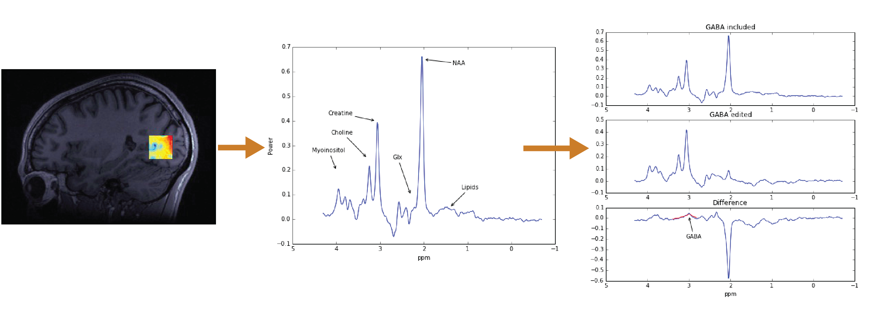

This library provides algorithms and methods to read and analyze data from Magnetic Resonance Spectroscopy (MRS) experiments. It provides an API for fitting models of the spectral line-widths of several different molecular species, and quantify their relative abundance in human brain tissue.
Try it out here
Having issues? Report them here